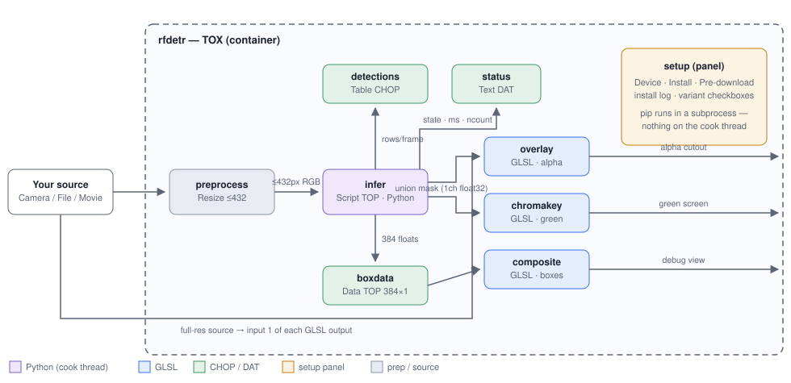

RF-DETR instance detection + segmentation inside TouchDesigner — self-contained TOX, component-relative scripts, tdPyEnvManager dependencies.
| Item | State | Notes |
|---|---|---|
| Design docs | Done | docs/architecture.md + docs/implementation-guide.md + the new-implementation spec in docs/superpowers/. |
| Component-relative scripts | Done | extension.pyt (root = me.parent()), callbacks.pyt, add_params.pyt — no absolute operator paths anywhere in python/; all covered by headless suites. |
Pure core python/core.py | Done | load_model, predict_frame, build_union, chromakey, check_dependencies; numpy-only top-level imports (torch/rfdetr lazy). Tested 17/17 headless. |
| Dependency management | Done | tdPyEnvManager env .venv, Python 3.11 (TDPyEnvManagerContext.yaml + requirements.txt). installer.pyt and the setup panel removed. |
| README | Done | README.md — requirements, quick start, parameter table, layout, development, troubleshooting. |
| TOX rebuild | Done | rfdetr.tox rebuilt (46 KB) and saved in TouchDesigner; all Python lives in DATs inside the TOX. |
| In-TD verification of the refactored DATs | Todo | Walk the checklist in §5 after syncing the DATs (§4). |
| Model weights pre-download | Partial | rf-detr-seg-medium + rf-detr-nano cached in %USERPROFILE%\.roboflow\models; other variants download on first use. |

Source → infer (Script TOP, GPU inference on the cook thread) → union mask TOP, boxdata TOP (384 floats) and detections DAT → the GLSL outputs (overlay / chromakey / composite), which also take the full-res source.
| Requirement | Status |
|---|---|
| TouchDesigner with a working license, bundled Python 3.11 | the TOX runs on the machine that runs the show |
| GPU (RTX-class) — optional | Device = auto selects CUDA when available (cu128 wheels) and falls back to CPU |
| Internet on first use | model weights (~100–350 MB per variant) download to %USERPROFILE%\.roboflow\models |
| Dependencies | tdPyEnvManager creates .venv from requirements.txt — rfdetr, torch, supervision, opencv-python-headless |
The .pyt files in python/ are the source of truth; the TOX carries them as DATs. After editing any of them, sync them back:
rfdetr.tox — double-click the container to open it.python/extension.pyt — paste into the infer Script TOP's Callbacks DAT.python/callbacks.pyt — paste into the container's Callbacks DAT.python/add_params.pyt — paste into python/add_params and re-run the Textport (idempotent — safe to re-run).python/core.py — paste into python/core..venv exists and is populated from requirements.txt..tox — right-click the container → Save As → rfdetr.tox.State cycles init → loading → ready on the first cook; the status DAT ends on a [ready] line.boxdata TOP is 384 × 1, 32-bit float; unused slots stay zeroed.detections DAT has the header row class_id, class, confidence, x1, y1, x2, y2, area, frame plus one row per detection.Model flips State to loading and the UI does not hang.rfdetr2 in a scratch project — it still cooks..tox into a brand-new empty project — it works with no path edits.| Symptom | Likely cause / fix |
|---|---|
[no-deps] in the status DAT | Python deps missing — run the tdPyEnvManager setup so .venv is created and populated from requirements.txt. |
| First cook of a variant takes a long time | Weights download (~100–350 MB) on first use to %USERPROFILE%\.roboflow\models. |
| CUDA unavailable on this machine | Set Device: cpu — or leave it on auto, which falls back automatically. |
operator not found-style errors | A missing internal DAT — the error message names the one (e.g. rfdetr/python/core). |